Cylinder Block Assembly (2GR-FE) Disassembly |
| 1. Inspect Connecting Rod Thrust Clearance |
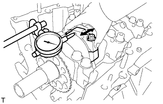 |
Using a dial indicator, measure the thrust clearance.
| 2. Inspect Connecting Rod Oil Clearance |
Using paint, mark the cylinder number on each connecting rod and bearing cap.
Remove the 2 bolts and bearing cap.
Clean the inner and outer surfaces of the bearings, the connecting rod ends and the crank pins.
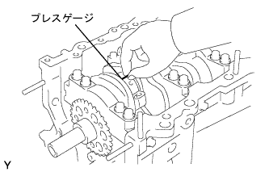 |
Lay a strip of Plastigage across the crank pin.
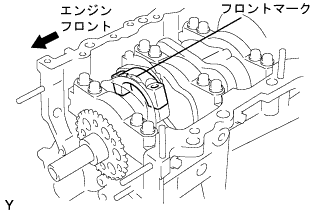 |
Check the combination of the connecting rod and bearing cap and the front mark on the bearing cap, and assemble the bearing cap to the connecting rod.
Apply a light coat of engine oil to the threads and seats of the bolts.
 |
Using a socket wrench (12mm 12 square), temporarily tighten the bolts in 2-3 passes, then tighten them to the specified torque.
 |
Mark the front of each bolt head with paint (engine front side).
Using the paint marks as a guide, retighten each bolt by an additional 90°.
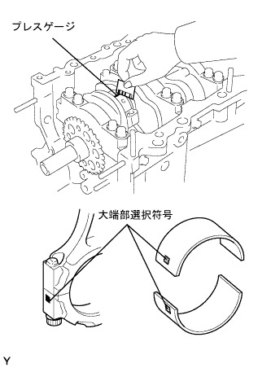 |
Remove the bearing caps and measure the Plastigage at its widest point.
| Selection Mark | Connecting Rod Big End Bore Diameter [mm] | Connecting Rod Bearing Thickness [mm] | Crank Pin Diameter [mm] |
|---|---|---|---|
| 1 | 56.000-56.006 | 1.481-1.484 | 52.992-53.000 |
| 2 | 56.007-56.012 | 1.484-1.487 | 52.992-53.000 |
| 3 | 56.013-56.018 | 1.487-1.490 | 52.992-53.000 |
| 4 | 56.019-56.024 | 1.490-1.493 | 52.992-53.000 |
| 3. Remove Piston with Connecting Rod |
Remove the 12 bolts and 6 bearing caps.
Remove the 6 piston with connecting rod assemblies from the cylinder block.
| 4. Remove Connecting Rod Bearing |
Remove the 12 connecting rod bearings from the connecting rods and bearing caps.
| 5. Inspect Crankshaft Thrust Clearance |
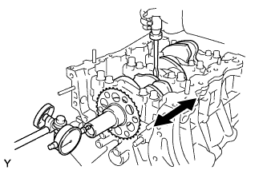 |
Using a dial indicator and a screwdriver, measure the thrust clearance.
| 6. Remove Crankshaft |
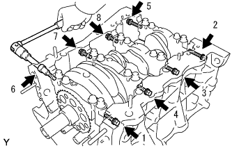 |
Uniformly loosen and remove the 8 bolts and 8 seal washers in 2-3 passes in the sequence shown in the illustration.
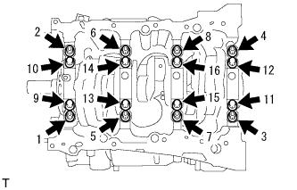 |
Uniformly loosen and remove the 16 bearing cap bolts in 2-3 passes in the sequence shown in the illustration.
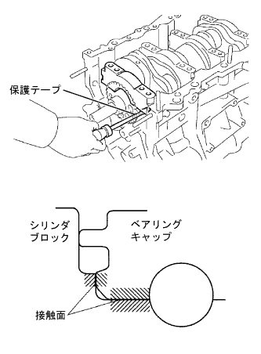 |
Using a screwdriver with its tip wrapped in protective tape, pry out the crankshaft bearing cap.
Remove the crankshaft from the cylinder block.
| 7. Remove Crankshaft Bearing |
Remove the crankshaft bearings from the bearing caps and cylinder block.
| 8. Remove Crankshaft Thrust Washer Set |
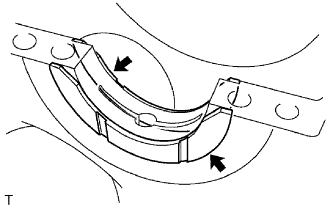 |
Remove the crankshaft thrust washer set from the front and rear of the No. No.2 journal on the cylinder block.
| 9. Remove Piston Ring Set |
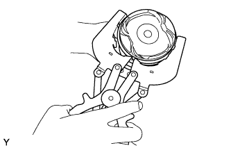 |
Using a piston ring expander, remove the compression ring No.1 and compression ring No.2.
Remove the oil ring expander and 2 oil ring side rails by hand.
| 10. Remove Piston Sub-assembly (with Pin) |
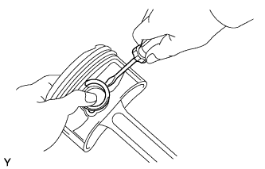 |
Using a small flat-tipped screwdriver, remove the piston pin hole snap ring.
Heat the piston to approximately 80°C.
Using a plastic-faced hammer and brass bar, remove the piston pin from the piston.
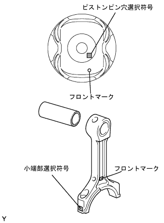 |
Arrange the removed parts in order according to their installation positions.
| 11. Remove Oil Nozzle Sub-assembly NO.1 |
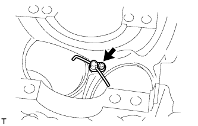 |
Using a 5 socket hexagon wrench, remove the 3 oil nozzles No.1.
| 12. Remove Straight Pin |
Remove the straight pins from the cylinder block.
| 13. Remove Stud Bolt |
Remove the stud bolts from the cylinder block.
| 14. Inspect Oil Nozzle Sub-assembly NO.1 |
Inspect the oil nozzles for damage or clogging.
| 15. Inspect Cylinder Block for Warpage |
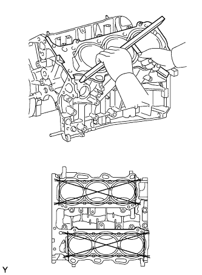 |
Using a precision straightedge and feeler gauge, measure the warpage of the top surface of the cylinder block.
| 16. Inspect Cylinder Bore |
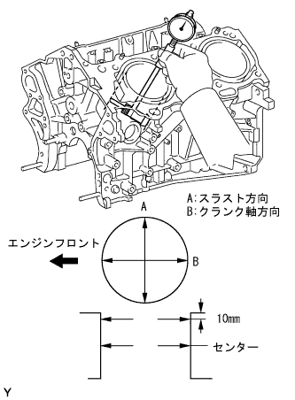 |
Using a cylinder gauge, measure the cylinder bore diameter at the 6 positions shown in the illustration.
| 17. Inspect Piston Sub-assembly (with Pin) |
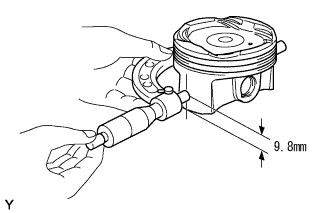 |
Using a micrometer, measure the piston diameter at right angles to the piston pin hole, 9.8mm from the bottom of the piston skirt.
| 18. Inspect Piston Oil Clearance |
Calculate the piston clearance from the minimum cylinder bore diameter and the piston diameter.
If the piston with pin or cylinder block has been replaced, check the piston clearance after replacement.
| 19. Inspect Ring Groove Clearance |
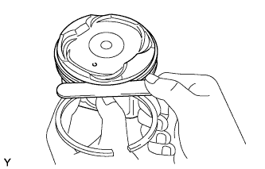 |
Using a feeler gauge, measure the clearance between the piston ring and the ring groove around the entire circumference of the piston.
| Ring | Standard [mm] |
|---|---|
| No.1 | 0.020-0.070 |
| No.2 | 0.020-0.060 |
| Oil | 0.070-0.150 |
| 20. Inspect Piston Ring End Gap |
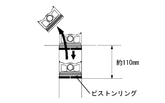 |
Using a piston, push the piston ring approximately 110mm down from the top of the cylinder block.
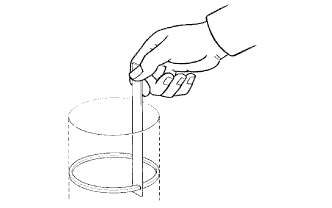 |
Using a feeler gauge, measure the end gap of the piston ring.
| Ring | Standard [mm] |
|---|---|
| No.1 | 0.25-0.35 |
| No.2 | 0.50-0.60 |
| Oil | 0.10-0.40 |
| Ring | Maximum [mm] |
|---|---|
| No.1 | 0.50 |
| No.2 | 0.85 |
| Oil | 0.60 |
| 21. Inspect Piston Pin Oil Clearance |
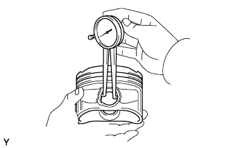 |
Using a caliper gauge, measure the inside diameter of the piston pin hole.
| Selection Mark | Piston Pin Hole Diameter [mm] |
|---|---|
| A | 22.001-22.004 |
| B | 22.004-22.007 |
| C | 22.007-22.010 |
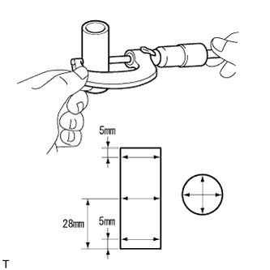 |
Using a micrometer, measure the piston pin diameter.
| Selection Mark | Piston Pin Diameter [mm] |
|---|---|
| A | 21.997-22.000 |
| B | 22.000-22.003 |
| C | 22.003-22.006 |
Calculate the clearance from the piston pin hole inside diameter and the piston pin diameter.
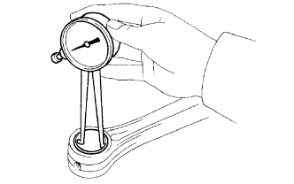 |
Using a caliper gauge, measure the inside diameter of the connecting rod small end bushing.
| Selection Mark | Connecting Rod Small End Bore Diameter [mm] |
|---|---|
| A | 22.005-22.008 |
| B | 22.009-22.011 |
| C | 22.012-22.014 |
Calculate the clearance from the connecting rod small end bore diameter and the piston pin diameter.
| Selection | Piston Pin Hole Diameter [mm] | Piston Pin Diameter [mm] | Connecting Rod Small End Bore Diameter [mm] |
|---|---|---|---|
| A | 22.001-22.004 | 21.997-22.000 | 22.005-22.008 |
| B | 22.004-22.007 | 22.000-22.003 | 22.009-22.011 |
| C | 22.007-22.010 | 22.003-22.006 | 22.011-22.014 |
| 22. Inspect Connecting Rod Bolt |
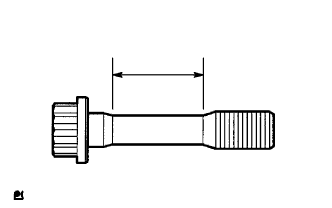 |
Using a vernier caliper, measure the outside diameter in the range shown in the illustration.
| 23. Inspect Crankshaft |
Runout Inspection
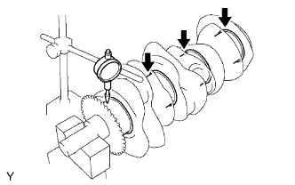 |
Using V-blocks and a dial indicator, measure the crankshaft runout.
Journal Diameter Inspection
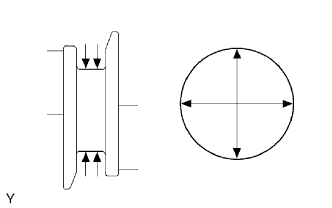 |
Using a micrometer, measure each crankshaft journal at the points shown in the illustration.
Calculate the out-of-round and taper.
Crank Pin Diameter Inspection
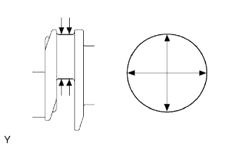 |
Using a micrometer, measure each crank pin at the points shown in the illustration.
Calculate the out-of-round and taper.
| 24. Inspect Crankshaft Oil Clearance |
 |
Clean the main journals and the inner and outer surfaces of the bearings.
Install Upper Bearing
 |
Install the upper bearing to the cylinder block so that it is near the center.
Install Lower Bearing
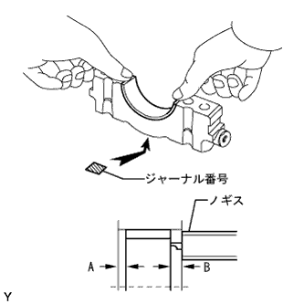 |
Install the lower bearing to the bearing cap so that it is near the center.
Using a vernier caliper, measure the distance between the bearing cap edge and the lower bearing edge.
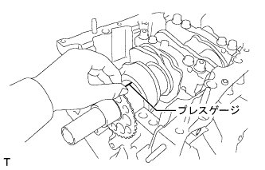 |
Install the crankshaft to the cylinder block and lay a strip of Plastigage across the crankshaft.
 |
Check the protrusions and journal numbers of the bearing caps and temporarily place the caps on the block.
Apply a light coat of engine oil to the threads and seats of the bolts.
 |
Push in the bearing cap by hand until the clearance (A) between the cylinder block and bearing cap is 6mm or less, and temporarily tighten the 8 bolts at the positions shown in the illustration.
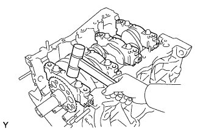 |
Using a plastic-faced hammer, lightly tap the bearing cap to ensure it is fully seated.
 |
Apply engine oil to the threads and under the heads of the bolts and temporarily tighten the 8 bolts.
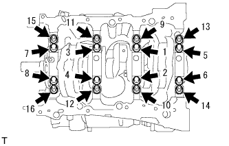 |
Using a socket wrench (14mm), temporarily tighten the bolts in 2-3 passes in the sequence shown in the illustration, then tighten them to the specified torque.
 |
Mark the front of the bolt heads with paint.
Using the paint marks as a guide, tighten each bolt an additional 90° in the tightening order.
Check that all paint marks have been turned 90° in the tightening direction.
 |
Temporarily tighten the bolts in 2-3 passes in the sequence shown in the illustration, then tighten the 8 bolts to the specified torque.
| Type | Length Under Head (mm) |
|---|---|
| Except Bolt A | 30 |
| Bolt A | 45 |
Remove the bearing caps.
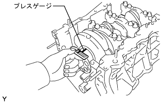 |
Measure the Plastigage at its widest point.
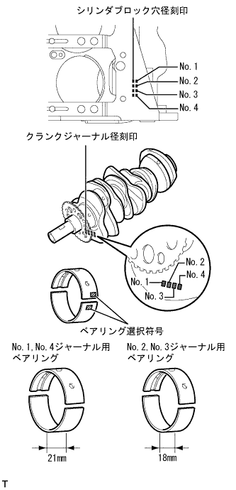 |
If the clearance is more than the maximum, select and replace the bearings.
| Sum of Block and Crankshaft Journal Marks | Bearing Selection Mark | Bearing Center Wall Thickness [mm] Upper Bearing | Bearing Center Wall Thickness [mm] Lower Bearing |
|---|---|---|---|
| 00-05 | 1 | 2.500-2.503 | 2.478-2.481 |
| 06-11 | 2 | 2.503-2.506 | 2.481-2.484 |
| 12-17 | 3 | 2.506-2.509 | 2.484-2.487 |
| 18-23 | 4 | 2.509-2.512 | 2.487-2.490 |
| 24-28 | 5 | 2.512-2.515 | 2.490-2.493 |
| Sum of Block and Crankshaft Journal Marks | Bearing Selection Mark | Bearing Center Wall Thickness [mm] Upper Bearing | Bearing Center Wall Thickness [mm] Lower Bearing |
|---|---|---|---|
| 00-05 | 1 | 2.478-2.481 | 2.500-2.503 |
| 06-11 | 2 | 2.481-2.484 | 2.503-2.506 |
| 12-17 | 3 | 2.484-2.487 | 2.506-2.509 |
| 18-23 | 4 | 2.487-2.490 | 2.509-2.512 |
| 24-28 | 5 | 2.490-2.493 | 2.512.-2.515 |
| 25. Inspect Crankshaft Bearing Cap Set Bolt |
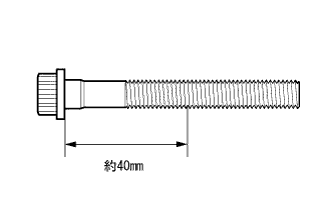 |
Using a vernier caliper, measure the outside diameter of the crankshaft bearing cap bolt approximately 40mm below the head.